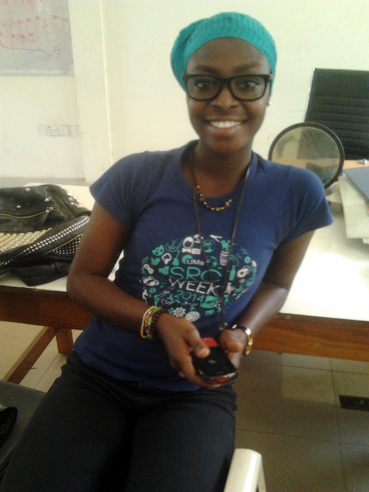

Fatimatu Iddrisu

+233206616983

fatidd2000@yahoo.com
Accra, Ghana
Personal Summary
Fatimatu holds a Bachelor of Science in Geological Engineering from the University of Mines and Technology (UMaT),
Tarkwa, Ghana. Prior to joining 10 Academy, she held several leadership positions: General Secretary of the
Students’ Representative Council, Vice President and President of Rotaract Club, among others, in the same
University.
She has worked on several projects ranging from community development, water and sanitation, geometallurgy and
agricultural innovation due to her strong affinity for leadership, innovation, entrepreneurship and humanitarianism
She won the "Rotary International Presidential Citation Award" for the Rotaract Club of the University of Mines
and Technology (UMaT), Ghana in the 2015/2016 Rotary Year.
She easily adapts to changing environments; She is results driven, a good team player and ready to learn;
Her thoughts-The greatest achievement for her is doing what people say she can't!
In a nut shell, "She's a goal getter and just herself!"
Education
(September 2013 – May 2017) University of Mines and Technology (UMaT), Tarkwa, Ghana
Programme: Bachelor of Science in Geological Engineering
Relevant Courses: Fluid Mechanics, Petrology, Mineralogy, Hydrogeology, Geophysics, Business Entrepreneurship,
Principles of Economics, Introduction to Management, Petroleum Geology, Mining Geology and Laws, Soil and Rock
Mechanics
Work Experience
(June 2015 - August 2015 ) Intern @ Goldfields Ghana Limited, Tarkwa, Ghana
Gained experience in surface mining operations such as database management, grade control, slope monitoring,
core logging, geochemical sampling, quality assurance quality control
(June 2016 - July 2016 ) Intern @ Adamus Resources Limited, Nzema, Ghana
Gained experience in surface mining operations such as drill and blast, database management, grade control,
environmental management, quality assurance quality control and assaying
 Fatimatu Iddrisu
@halikel98
Fatimatu Iddrisu
@halikel98